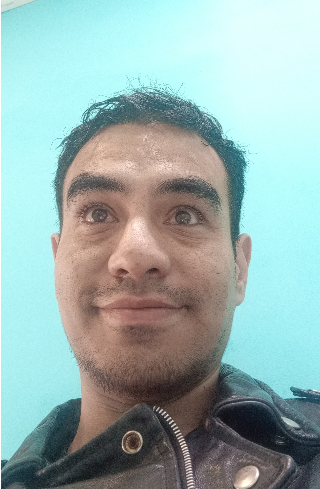
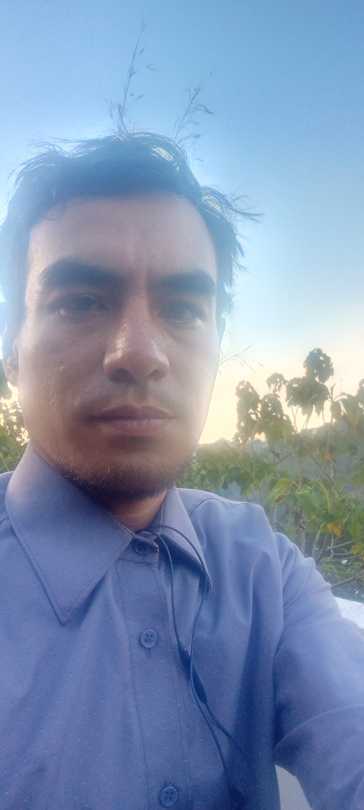
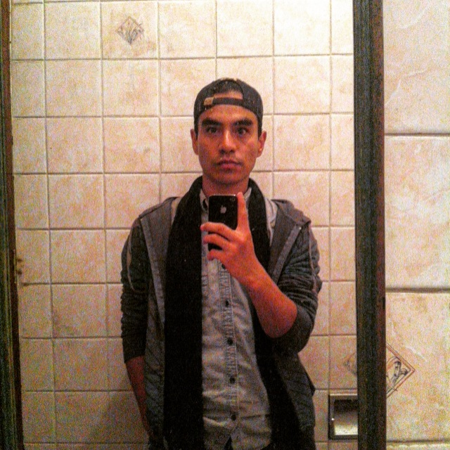
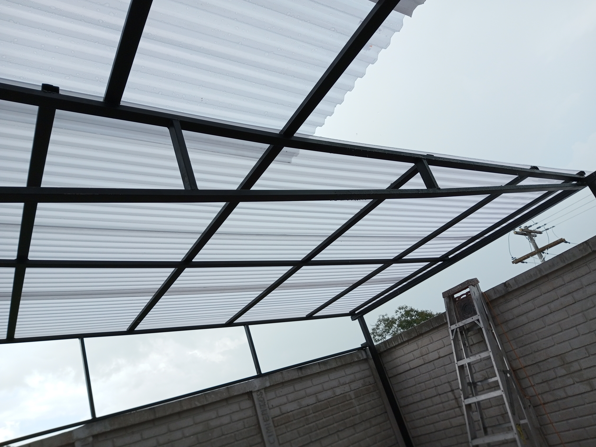
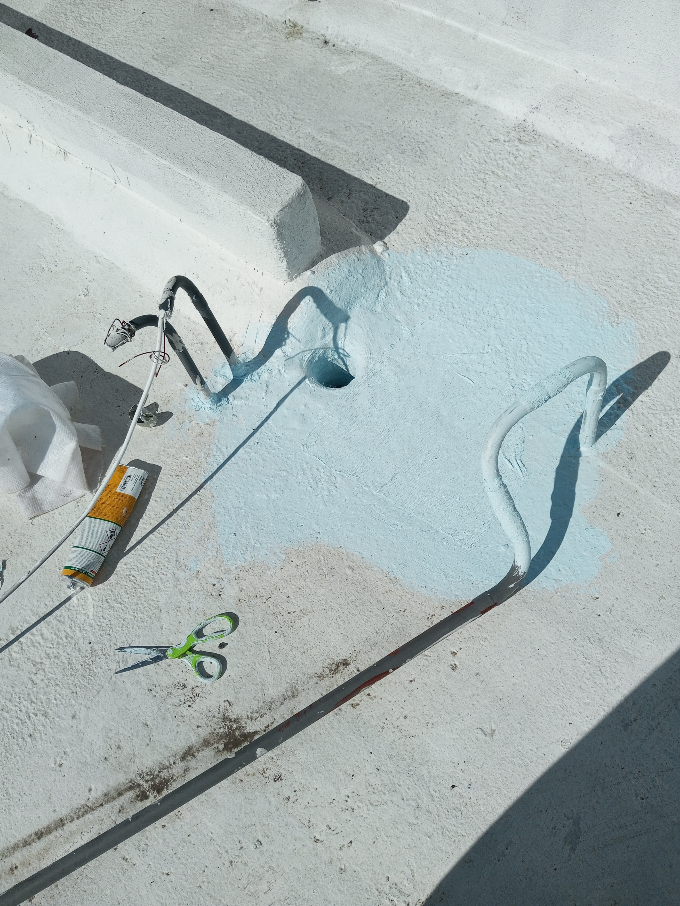
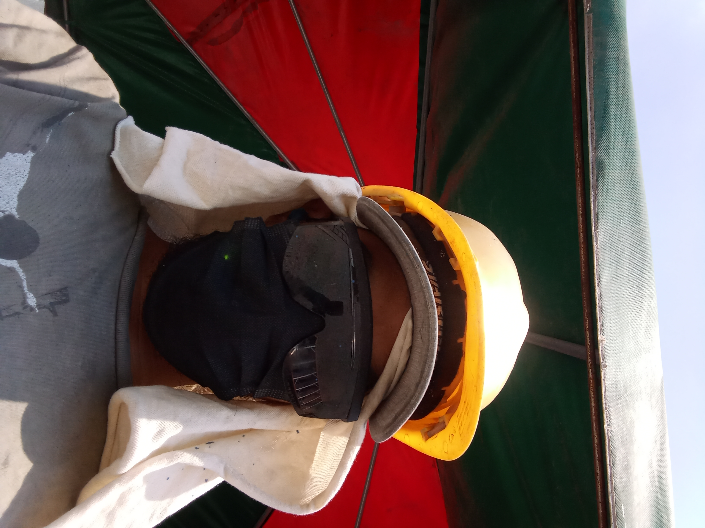

I'm Ricardo José Miranda Morales

Client review from
Exeter, England ⭐"Thank you to the Central American team that made this possible and to such high quality."
— Tony Eccles & Ruth Gidley, RAMM Museum
Front-end Developer
MY PROJECTSWHO AM I?
I'm a Guatemalan multimedia producer, fixer, and maker working at the intersection of technology, visual storytelling, and hands-on fabrication. My work has been published internationally. I've served as a field photographer for IPS (Inter Press Service), with credited work covering human rights stories in Guatemala. I also worked as a production fixer on a documentary commissioned by the Royal Albert Memorial Museum (RAMM) in Exeter, England — a bilingual film about Maya weavers from Santa Catarina Palopó that now forms part of their permanent Latin America gallery. On the technology side, I'm currently training as a frontend developer through Funval, with multiple projects deployed on Vercel and published on GitHub. I've also independently developed an MVP for a CRM/TMS system for a logistics operation — built from scratch, still in active development. Beyond screens, I build things physically. I work with embedded systems (ESP32, Arduino), IoT automation, 3D printing, electronics prototyping, and fabrication. My projects range from smart automation systems to custom-built tools — designed, tested, and assembled by hand. I don't specialize in one lane. I understand production, technology, and fabrication well enough to connect them — and that's where I do my best work. Based in Guatemala. Available for field production, fixation, photography, and technical projects.
Programming is my passion. Additionally I like to play PC games and 3d print in my leisure time.
SHOW MY PROJECTS


MY SKILLS


Additional Skills


THE WORKS CLOSEST TO MY HEART
SHOW MY PROJECTS
Maintenance Technician

Photographer

Welder